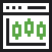

<div class="xl:py-[100px] md:py-[80px] py-[40px] bg-common-gradient max-sm:border-b">
  <div class="container mx-auto">
    <div class="flex flex-col items-center xl:gap-[80px] md:gap-[60px] gap-[32px] w-full max-xl:px-[16px]">
      <div class="flex flex-col items-center gap-6 max-w-[952px] mx-auto">
        <div class="desktop-heading-h2 greyScale-dark text-center">
          <a>Market Data Types</a>
        </div>

        <div class="desktop-body-text greyScale-darker-grey text-center">
          Our depth of expertise in market data enables us to offer a vast array of data types, including specialized
          aggregations like Renko bars and options expiry bars, computed analytics such as custom indicators, tailored
          data based on market participants and trade/quote types, ensuring a comprehensive suite of data solutions for
          diverse market needs.
        </div>
      </div>

      <div class="w-full">
        <div class="grid lg:grid-cols-4 grid-cols-2 w-full border-b">
          <div class="flex flex-col items-center gap-4 max-sm:gap-2.5 border-r max-lg:border-b lg:pb-10 pb-4 pr-5">
            
            <div class="desktop-body-text greyScale-dark-grey text-center">
              TAQ (Trade+Quote) series, including TAQ, TANQ (Trade+NBBO Quote) and TTOB (Trade + Top of Book)
            </div>
          </div>

          <div class="flex flex-col items-center gap-4 max-sm:gap-2.5 lg:border-r max-lg:border-b lg:pb-10 pb-4 px-5">
            
            <div class="desktop-body-text greyScale-dark-grey text-center">
              Advanced TAQ Bars <br />(flexible intervals available, 90+ data points)
            </div>
          </div>

          <div class="flex flex-col items-center gap-4 max-sm:gap-2.5 border-r lg:pb-10 pb-4 max-lg:pt-4 px-5">
            
            <div class="desktop-body-text greyScale-dark-grey text-center">
              Trade Only Bars <br />(flexible intervals available)
            </div>
          </div>

          <div class="flex flex-col items-center gap-4 max-sm:gap-2.5 lg:pb-10 pb-4 max-lg:pt-4 pl-5">
            
            <div class="desktop-body-text greyScale-dark-grey text-center">Full Depth / Multiple Depth</div>
          </div>
        </div>

        <div class="grid lg:grid-cols-4 grid-cols-2 w-full">
          <div class="flex flex-col items-center gap-4 max-sm:gap-2.5 border-r max-lg:border-b max-md:pb-4 lg:pt-10 pt-4 pr-5">
            
            <div class="desktop-body-text greyScale-dark-grey text-center">Trade Only</div>
          </div>

          <div class="flex flex-col items-center gap-4 max-sm:gap-2.5 lg:border-r max-lg:border-b max-lg:pb-4 lg:pt-10 pt-4 px-5">
            
            <div class="desktop-body-text greyScale-dark-grey text-center">Daily OHLC</div>
          </div>

          <div class="flex flex-col items-center gap-4 max-sm:gap-2.5 border-r lg:pt-10 pt-4 px-5">
            
            <div class="desktop-body-text greyScale-dark-grey text-center">End of Day</div>
          </div>

          <div class="flex flex-col items-center gap-4 max-sm:gap-2.5 lg:pt-10 pt-4 pl-5">
            
            <div class="desktop-body-text greyScale-dark-grey text-center">Custom Data</div>
          </div>
          
        </div>
      </div>
    </div>
  </div>
</div>
